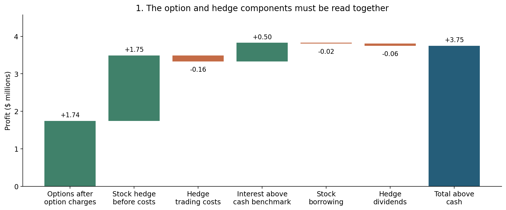
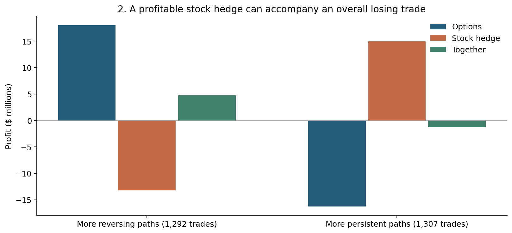
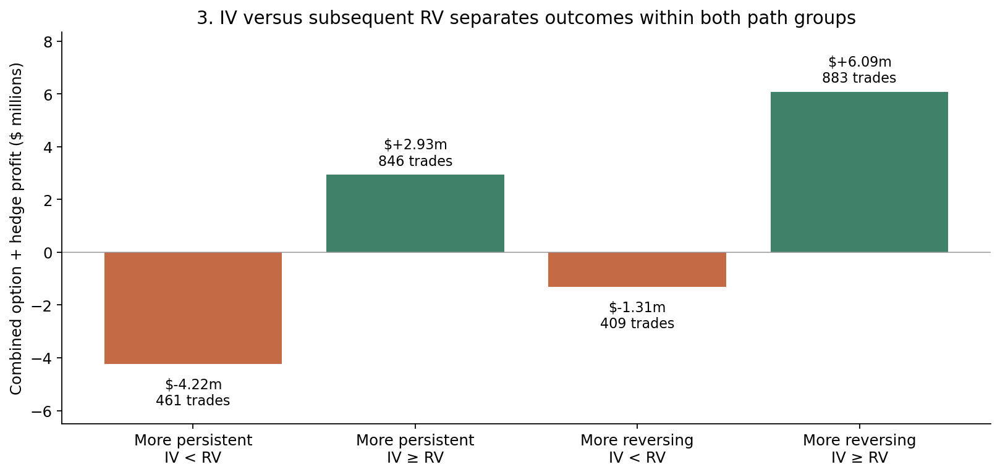
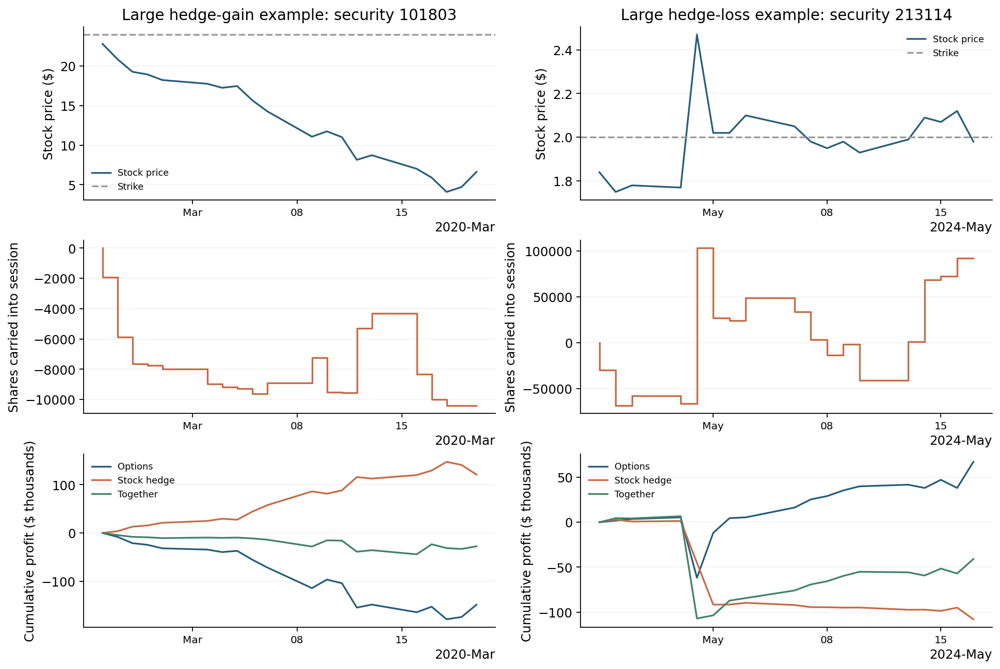
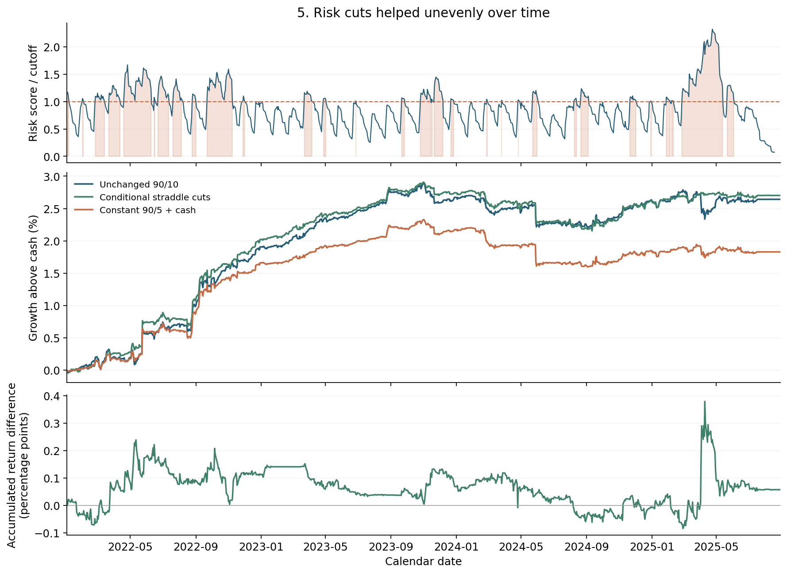

A focused research extension: economic attribution and one risk-management experiment. The original repository strategy and paper remain the baseline. This report separates an explanation of historical profits from evidence of a new trading edge.
The inherited system combines 25-delta put pairs with short at-the-money straddles. Put pairs buy one stock’s put and sell another’s, matching vega approximately at entry, then hedge delta daily. Their relative-volatility trade is different from selling both a call and a put on one stock. The evidence below concerns the straddle sleeve; it is not proof of the put-pair return mechanism.
The straddle shorts a matching call and put, carries a daily stock delta hedge and generally holds to expiry. Entry screening and contract/risk checks precede sizing. A ridge profit score is mapped to buckets with searched size assignments; an outer Q allocation exists in the inherited research. Neither learning layer was introduced by this attribution study. The final risk experiment instead uses a fixed 90% put / 10% straddle budget and half-size entries in both sleeves.
Two populations must stay separate: Figures 1–4 describe 2,599 actual straddle cohorts over 2018–29 August 2025 from the saved straddle account; Figure 5 and the performance table describe a separate $10 million joint executable account over 2022–29 August 2025. The joint account uses whole contracts, costs, funding and shared risk limits. Its Sharpe must not be compared as if it came from the full-history straddle account.

Options after their charges contributed $1.74 million and stock hedges before hedge costs contributed $1.75 million. Their combined $3.49 million becomes $3.75 million above cash after the remaining hedge costs, borrowing, dividends and interest relative to the cash benchmark. Option P&L includes time decay, price changes and volatility revaluation; it is not a pure theta attribution. Stock-hedge P&L is not an isolated gamma cost.
A short straddle has negative gamma. As the stock rises, its hedge tends to buy shares; as the stock falls, its hedge tends to sell shares. Continuing moves can make the held stock hedge profitable while the short option loses more. Reversals can hurt the hedge while the options retain more premium. The negative-gamma cost belongs to the combined option-and-hedge economics, so the sign of the stock component alone cannot identify an independent source of return.

More reversing paths contributed +$4.78 million together: option gains exceeded hedge losses. More persistent paths contributed −$1.29 million together: hedge gains did not cover option losses. Across the groups, stock-hedge gains of about $14.96 million outweighed stock-hedge losses of about $13.21 million, explaining the positive $1.75 million aggregate hedge contribution. This does not mean the strategy profits overall from persistent trends.
Persistence is |log(final price / entry price)| divided by the sum of absolute daily log returns over the holding period. Values at or below 0.20 are called more reversing; values above 0.20 more persistent. This is a descriptive boundary applied after observing the path, not a forecast, optimized entry condition or claim that ordinary Brownian motion belongs to one group.

| Price path | Entry IV vs later RV | Trades | Combined profit ($m) | Mean profit / entry premium |
|---|---|---|---|---|
| More persistent | IV < RV | 461 | -4.22 | -36.9% |
| More persistent | IV ≥ RV | 846 | +2.93 | +13.0% |
| More reversing | IV < RV | 409 | -1.31 | -15.3% |
| More reversing | IV ≥ RV | 883 | +6.09 | +25.4% |
Entry IV is the common annualized European/dividend-escrow implied volatility that reprices the combined call-and-put entry mid premiums. Subsequent RV is sqrt(252 × mean(daily log return squared)) from the entry close to actual exit close, without subtracting the sample mean. These are stock-specific measures; VIX is not substituted for either.
The split is consistent with selling volatility at a premium to the movement subsequently realized. But it is not an identity for individual trades: 220 trades lost despite entry IV exceeding subsequent RV. Discrete hedging, jumps, changing gamma, costs and different holding paths matter. Calendar-time annualization changes 69 gap classifications and a dividend adjustment changes six. Three trades exited early. This sensitivity limits any claim that a simple unweighted IV−RV comparison exactly reproduces option P&L.
Both subsequent RV and persistence use future observations. They explain realized outcomes but cannot be used as entry signals in this form. Mean profit divided by entry premium is also not a Sharpe or an equal-risk comparison. This evidence is consistent with volatility-risk compensation; it does not establish exposure-adjusted alpha or prove the return is fully explained by a risk premium.

Read each column vertically. The stock position is the daily delta hedge, not a separate trend strategy. Its profit is earned on shares already held during that session’s price move. The option and stock curves offset; the green combined curve is the first economic result to inspect. Security IDs are stable identifiers, rather than potentially renamed stock tickers.
The attribution uses saved holdings and recovered quote paths. One historical quote-availability convention was inferred; replaying with the observed recovered quotes changes the full-history hedge total by $367.52. This publication retains the reconciled saved-account attribution. It does not claim exact independent regeneration from raw quotes, and the difference is disclosed rather than treated as a new profit source.
One bounded candidate predicts the magnitude of the next-session straddle-book market P&L using a nonnegative regression of gross straddle vega and the root-mean-square of its preceding 21 session P&Ls. It predicts absolute movement, not loss direction. Coefficients and a 75th-percentile risk-per-NAV cutoff were fitted on 2018–2021 and frozen before the management trial. The reference book remains unchanged alongside the managed account, so trimming cannot mechanically turn its warning off.
When the warning is high, new straddles are paused and existing cohorts receive a next-close target of half their original integer contracts, rounded down. One-contract cohorts close. Trims remain in place; only new entries resume when the warning clears. Put rules remain unchanged. The first possible action was 3 January 2022. The trial did not search new cutoffs or reduction sizes.

| Account | Annualized mean excess return | Volatility/year | Excess Sharpe | Worst cash-relative drawdown |
|---|---|---|---|---|
| Unchanged 90/10 | 0.718% | 0.525% | 1.37 | -0.676% |
| Conditional straddle cuts | 0.733% | 0.465% | 1.58 | -0.734% |
| Constant 90/5 + cash | 0.499% | 0.435% | 1.15 | -0.719% |
The conditional account’s excess Sharpe rose from 1.37 to 1.58, mainly through lower volatility with little change in mean return. The constant-lower control has budgets of 90% put, 5% straddle and 5% idle cash; it does not match the conditional account’s average exposure. Its Sharpe reached 1.15, so the observed result is not equivalent to simply reducing the straddle budget at all times. Annualized mean excess return in the table is the arithmetic daily excess-return mean multiplied by 252, not CAGR. Nevertheless, the paired 126-session block-bootstrap 95% interval for the Sharpe gain versus holding is −0.22 to +0.66, and cash-relative maximum drawdown was slightly worse. The bootstrap conditions on the saved histories and does not adjust for previous research or selection. The gain is promising but unproven. All these historical dates have been researched; this is not a fresh holdout.
The substantive contribution is a coherent explanation of the surprising hedge profits, a decomposition of outcomes by realized path and IV–RV, and one interpretable risk-management candidate. The evidence does not establish new alpha, an industry-selection edge or reliable improvement from the learning layers. A proper market/sector exposure attribution and independent validation of the risk rule remain open. No new allocation or entry policy is promoted from these descriptive splits.
Unsuccessful forecast, sizing and allocation variants were also investigated. Their detailed development outputs are excluded from this focused publication. They did not establish a replacement policy and the retained risk candidate should not be read as the only idea ever examined. Supporting audit and reconstruction work is likewise not counted as a strategy contribution.
From the repository root run: python -m scripts.strategy_economics. This verifies the retained input hashes, recomputes the displayed groupings and later account Sharpes, and regenerates this report, its figures and compact tables offline. It reproduces the publication from frozen derived research outputs; it does not download WRDS data, rerun the backtest, refit the models or certify the original market-data pipeline.
data/manifest.json records each selected snapshot’s source path and SHA256, the historical working commit, and the remote baseline. The original strategy paper and repository code remain available at their existing locations. No raw option quote history is included in this extension. See README.md for the source map, dependency versions and explicit limits.